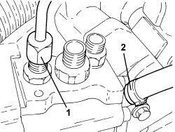
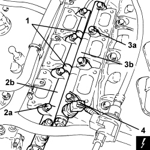

1056F61 LEFT CYLINDER HEAD FUEL MANIFOLD PIPE - R.R.
- Path
- Procedures > 10 ENGINE > 1056 PETROL INJECTION SYSTEM > 1056F PETROL DIRECT INJECTION SYSTEM > 1056F61 LEFT CYLINDER HEAD FUEL MANIFOLD PIPE - R.R.
- Kind
- repair procedure (removal / refitting; the operation number is the code)
- Applies to
- engines: 3.2 JTS; all production periods
- Interactive page
- https://sloeber94.github.io/elrnDB-aBrrSpdr/en/#/946001919
Applies to: engines: 3.2 JTS; all production periods
 Removing
Removing
 Refitting
RefittingOp. 1056F74 LOW PRESSURE PIPE TO FUEL PRESSURE PUMP - R.R.
Op. 1056F76 HIGH PRESSURE PIPE FROM PRESSURE PUMP TO SINGLE FUEL MANIFOLD PIPE - R.R.
Op. 1072B50 AIR CHAMBER - R.R.
1. Loosen the connector for the fuel return pipe, pressure pump side and place it to one side.
2. Loosen the band and disconnect the fuel vapour pipe from the pressure pump.

Applies to: engines: 3.2 JTS; all production periods
1. Remove the adhesive tape securing the injector wiring to the fuel manifold pipe for the left cylinder head.
2. Undo the bolts (2a) securing the fuel manifold pipe for the left cylinder head (2b).
3. Undo the bolts (3a) securing the fuel manifold pipe for the right cylinder head (3b).
4. Disconnect the electrical connection for the fuel pressure sensor.
Description | Connector | |
|---|---|---|
4 | Fuel pressure sensor |
- Remove the fuel manifold pipe for the left cylinder head (2b).

Applies to: engines: 3.2 JTS; all production periods
Refitting
Removing- Lubricate the O-rings on the injectors with engine oil.
- Fit the retaining clips that may have been removed during the removal of the fuel distribution manifold on the injectors.
- Fit the fuel distribution manifold for the left head on the injectors.
- Secure the injectors to the fuel distribution manifold for the left cylinder head using the retaining clips.
- Definitively secure the two fuel distribution manifolds to the cylinder heads tightening the bolts to the recommended torque.
Component | Fastening | dia | Value (daNm) | Validity |
|---|---|---|---|---|
Fuel manifold pipe | Bolt | - | 1.0 | 3.2 JTS |
- Connect the electrical connection for the fuel pressure sensor.
- Connect the fuel vapour pipe to the pressure pump and secure it using the band.
- Place the fuel return pipe in its housing and tighten the connector to the pressure pump.
Op. 1072B50 AIR CHAMBER - R.R.
Op. 1056F76 HIGH PRESSURE PIPE FROM PRESSURE PUMP TO SINGLE FUEL MANIFOLD PIPE - R.R.
Op. 1056F74 LOW PRESSURE PIPE TO FUEL PRESSURE PUMP - R.R.
- Check for any fuel leaks in the area where the injectors-distribution manifolds for the left and right cylinder heads are connected following the instructions in test 1056BA.
Topics linked from this page (4)
- 1056F74 LOW PRESSURE PIPE TO FUEL PRESSURE PUMP - R.R.
- 1056F76 HIGH PRESSURE PIPE FROM PRESSURE PUMP TO SINGLE FUEL MANIFOLD PIPE - R.R.
- 1072B50 AIR CHAMBER - R.R.
- K083 FUEL PRESSURE SENSOR